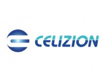
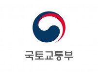
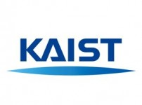
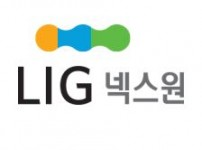

project 17
실내에서 GNSS 신호만을 이용하여 측위가 가능한 시스템을 구현하기 위해, GNSS(GPS L1 C/A 신호와 Glonass G1 신호) 기반 도움 정보를 제공하는 서버와 기존 기술대비 1000배 이상 빠른 TTFF를 만족하는 실내 GNSS 수신기용 신호처리 알고리즘을 개발한다. 본 연구는 다중경로 오차완화 알고리즘 연구 및 칼만 필터 기반 항법 알고리즘 개발을 통해 위치정확도 10m를 목표로 한다.
project 16
본 과제는 MS-Assisted GNSS(GPS L1 C/A 신호와 Glonass G1 신호 사용)의 도움정보 생성 알고리즘과 핵심 측위 알고리즘을 개발한다. 퀄컴 측위 엔진보다 좋은 측위 성능을 갖는 핵심 측위 엔진을 국산화하여 SKT 상용망에서 서비스 하는 것을 최종 목표로 한다.
project 15

도심에서 멀티패스의 영향으로 GNSS 측위 오차가 매우 큰 상황에서 주변 건물 정보(GIS)를 이용하여 가상위성 생성 및 재측위 하는 측위성능 향상 알고리즘을 개발한다. 개발 결과는 SKT 상용망에서 서비스 되는 MS-Assisted GNSS(GPS, Glonass) 시스템과 같이 동작하는 것을 목표로 한다.
project 14

자율주행 자동차와 C-ITS 기술을 완성시키는 중대 요소이며 최종 결정 요소인 미래 도로 교통 시스템이 갖춰야할 요구 조건을 파악하고 이에 따른 적절하고 효과적인 연구 로드맵과 현실적인 미래도로 구축 로드맵 개발
project 13
Federated 칼만필터 기반의 센서융합(DGPS/IMU/RFID/Tachometer) 알고리즘 개발을 통해, 400km/h 초고속 열차 주행환경에서 1m이내의 위치오차를 갖는 위치검지시스템 개발을 개발한다. 연구 마지막 연차에는 실제 초고속 열차인 HEMU에 적용하는 것을 목표로 한다.
project 12
GPS 다중경로 오차 완화를 위해 Super-Resolution 기반 기술인 LIMS(Least Squares based Iterative Multipath Super-Resolution Algorithm)를 적용한다. 다중경로 오차가 발생할 수 있는 환경에서 GPS 위성 신호 데이터를 수집하고, 다중경로에 대한 신호의 환경을 분석한다.
project 11
칩에 의존하지 않고 SW 레벨 수준에서 NMEA(National Marine Electronics Association)와 DGPS 보정정보의 후처 리(Post processing)를 통해서 스마트폰 제조사의 하드웨어 기능적 지원 없이 위치 기반으로 DGPS를 구현하여 기존 GPS 서비스보다 향상된 위치 결정 기술력을 확보한다.
project 10

C-ITS group research
project 9
본 연구에서는 GINS 초기정렬을 위한 랜드마크/라인트랙 영상항법 알고리즘을(초기화, 정밀좌표, 각정열, 속도) 개발하고, 실제 테스트를 통해 검증하는 것을 목표로 한다.
project 8
본 연구는 Software GPS 신호를 이용한 Anti Jamming과 Super-resolution 융합 기술을 개발하고, 실제 시스템에 적용 가능성을 평가하기 위한 성능 검증한다. 또한, PA-GPS 신호 탐지 알고리즘 성능을 필드 테스트를 통해 검증하는 것을 목표로 한다.
project 7
본 연구는 한국 국립 과학박물관 내 자율주행 시스템의 구현을 위한 선행 연구로서, 일반적인 관성센서와 GPS 정보를 함께 사용한 INS/GPS 약결합 항법 시스템을 구현하는 것을 목표로 한다.
project 6

의사위성또는 GNSS등과 같은 위치 측위 및 시각동기 시스템의 정밀도 향상을 위한 초고해상도(Super-Resolution)기술을 이용한 다중경로 분해 알고리즘 구현하고, 실제상황에서의 실험을 통해 성능을 검증한다.
project 5
다변측정 감시시스템(Multilateration)기술개발 기획
project 4
GPS 수신기가 내장된 단말기들로 구성되는 Ad-Hoc 망에서, 기존 30초 이상 소모되는 GPS 수신기의 초기화 시간(TTFF: Time To First Fix)을 비약적으로 줄이는 기술을 개발하는 것을 목표로 하며 초기화를 시작하는 GPS 수신기가 이미 초기화를 마친 다른 GPS 수신기와 무선 단대단 (P2P: Peer-to-Peer Communication) 통신을 통하여 TTFF를 2초 이내로 만드는 핵심 원천 기술을 개발한다.
project 3
INS/GPS 약결합 기법에 대한 EKF, UKF, PF의 성능 비교